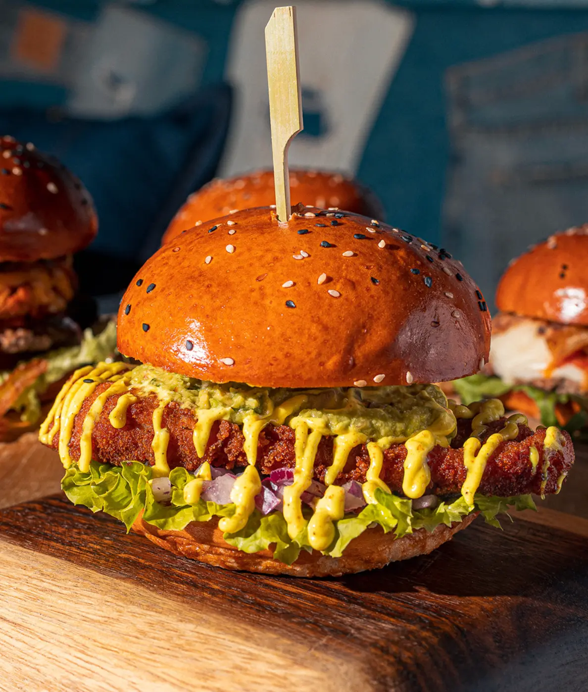
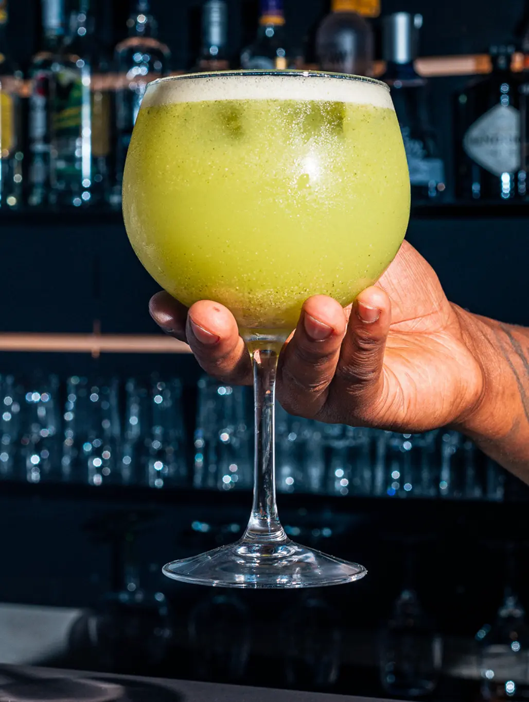

Blue Jeans
€16,90100% novilho nacional, bacon, porco desfiado, cheddar gratinado, cebola frita, maionese BJ, tomate e alface. Com batata frita.
Escolhe o teu fit

100% novilho nacional, bacon, porco desfiado, cheddar gratinado, cebola frita, maionese BJ, tomate e alface. Com batata frita.
Novilho, mozzarella fresca, tomate cherry em redução de balsâmico, cebola panada, pesto e rúcula.
Novilho, pepperoni, guacamole, molho hot e rúcula.
Smash de vaca, cheddar, alface, tomate, cebola roxa, pickles e cebola frita da casa.
Novilho, cheddar gratinado, bacon estaladiço, alface e tomate.
Seitan ou tofu com arroz integral, portobello, vinho branco e molho de soja.
Novilho, compota de bacon, portobello, cheddar gratinado e rúcula.
Novilho, queijo de cabra gratinado, pickles, cebola panada e alface.


Tiras de frango panadas e fritas com aioli de salsa.
Asas de frango fritas com molho sweet chilli.
Batata doce frita em palitos com molho sweet chilli.
Salmão curado na casa, folhas, tomate cherry, rabanete, pickles, abacate, nozes, ovo e emulsão de aneto.
Couscous com especiarias e mel, sultanas, nozes, legumes, camarão e pesto de coentros.
Salmão curado na casa, queijo creme, folhas, tomate e emulsão de aneto.
Pasta especial de atum, folhas e tomate. Com batata frita.
Tortilha recheada com legumes variados.
Pergunta pela seleção disponível.
Uma das escolhas mais recomendadas por quem visita.
Leve e cremosa.